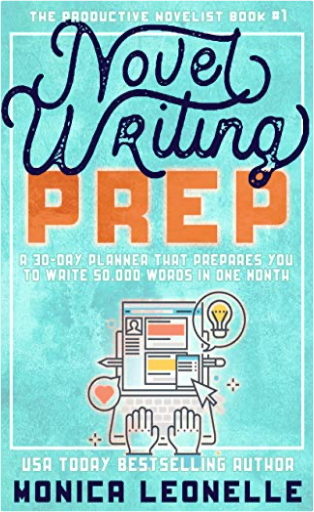
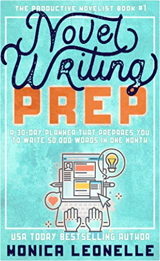

Novel Writing Prep: A 30-Day Planner That Prepares You To Write 50,000 Words in One MonthLeonelle, Monica  |
 Made with Delicious Library
Made with Delicious LibraryCalgary, AB zipflap congrotus delicious library Bloodworth, Daria
Novel Writing Prep: A 30-Day Planner That Prepares You To Write 50,000 Words in One MonthLeonelle, Monica |
Made with Delicious LibraryCalgary, AB zipflap congrotus delicious library Bloodworth, Daria